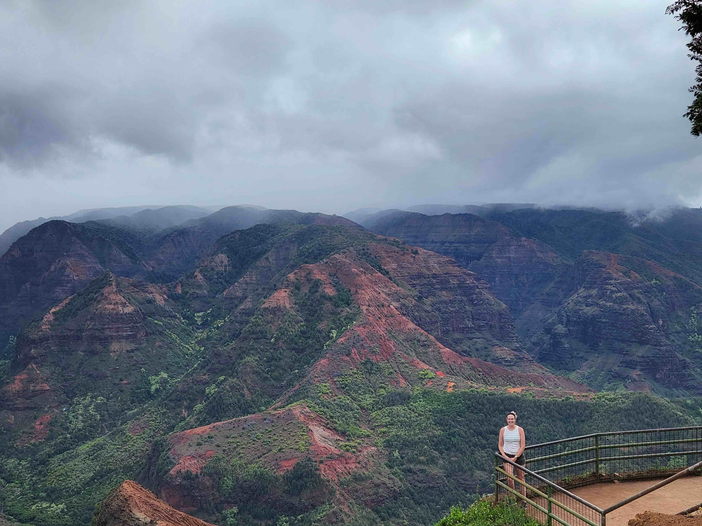
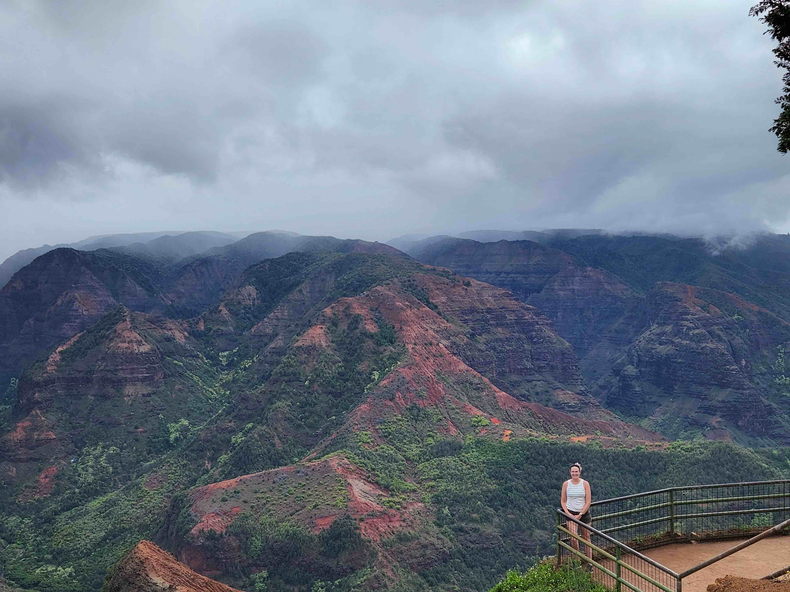

Education/Skills
- Associate of Arts - North Central Michigan College
- Bachelor of Science - Central Michigan University
Concentration in Geographic Information Systems
Concentration in Anthropology: Archaeology - Front-end Web Development Certificate - University of Washington
Currently enrolled


 
